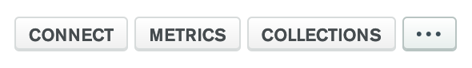
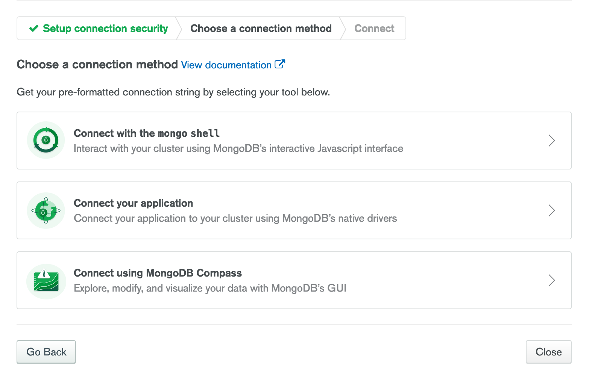
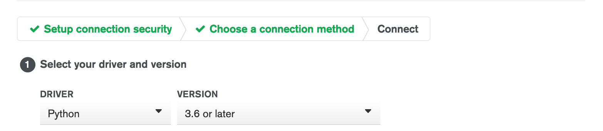

PythonからMongoDBのクラウドサービスであるMongoDB Atlasにアクセスして、データを取得する方法についてメモしておきます。ここでは、将来的にはAPIサーバーとして運用することを想定して、Flaskをついでに導入しています。
MongoDB Atlasについては日本語の記事があまり見受けられなかったので、同じような方法で接続しようとしています方の一助になれば幸いです。
ここでは下記の処理が済んでいることを前提としています。
プロジェクトのトップページから左メニュー内の「Database Access」を選択すると、ユーザーの一覧が表示されます。ここで「Add new database user」ボタンをクリックすると、新しいユーザーを追加できます。ここの権限設定で「Only read any database」を選択しておけば、プロジェクト内におけるどのデータベースでもRead権限でアクセスできるようになります。
単純に接続確認をするだけなら初期ユーザーで行えばいいわけですが、初期ユーザーはAdmin権限なのでただ接続確認するだけなら権限としては不要でしょう。それに、今後恒常的に利用することを鑑みると、専用のユーザーを作成しておくほうが望ましいと思いました。
pipで必要なライブラリをインストールする。大雑把な手順は上記のとおりです。順に説明します。
Python自体の環境は、Dockerコンテナによる構築やローカルへのインストールなど好きな方法で準備します。接続用ドライバーはPythonのバージョンで内容が異なりますが、あまりに古いバージョンをあえて利用しなければならない場合を除けば、安定版を準備するべきと思います。どっちかって言うと注意が必要なのは、後述するMongoDBへの接続用のライブラリです。
FROM python:3.8-buster今回、自分は上記のイメージでDockerコンテナを作成しています。まぁほかのプロジェクトのDockerfileを流用しただけなんですけど。
pipで必要なライブラリをインストールするMongoDBへ接続するのに必要なライブラリはpymongoというもの。ところがこれをインストールする際には、ちょっとした記述が必要になります。
python -m pip install pymongo[snappy,gssapi,srv,tls]
あるいは
pip3 install pymongo[srv]
pip install pymongo[srv]角カッコの中身なに？というところなのですが、この中で最低でもsrvは記述が必要です。pip install pymongoとだけ書くと、あとで実行したときに「dnspython must be installed error」というわかりにくいエラーになってしまうので注意が必要。なお、pipでこのように角カッコを記述するのは、インストール対象のライブラリについて環境を指定したい場合。つまり単純にpymongoとするだけではダメで、srv用環境としてのpymongoが必要なわけです。
とりあえず、最低限接続に必要なライブラリはこれだけなのですが、後々APIサーバーとして扱いたいので自分はFlaskもインストールしておきました。
MongoDBには、いわゆるAPI Keyとは異なる接続用のドライバーが存在します。ドライバーは簡単に取得できます。

まずはとりあえず、いつもどおりMongoDB Atlasにログインします。次に接続したいクラスタの「CONNECT」ボタンを押します。

表示されたメニューのうち、真ん中の「Connect your application」を押します。

次に表示されたメニューから、接続元の環境を選択します。ここではPythonの3.6以降を選択しました。すると、mongodb+srv://で始まる文字列が表示されると思うので、この文字列を丸々コピーして控えておきます。後述するPythonスクリプトに記述するのですが、ここで編集が必要になるのは下記の項目。
<username>となっている部分を書き換える。もちろん<>の部分もだぞ！<password>となっている部分を書き換える。もちろん<>の部分もだぞ！myFirstDatabaseとなっている部分を書き換える。Replace
<password>with the password for the<username>user. Replace myFirstDatabase with the name of the database that connections will use by default.
まぁこのページ内で上記のように注意書きされているので、書き換え忘れることはないと思いますが。
Pythonスクリプトは下記の内容であれば、とりあえず接続して値を取得できるはずです。
from flask import Flask
from flask_cors import CORS
import pymongo
connection_url = 'mongodb+srv://<USERNAME>:<PASSWORD>@hoge.fuga.mongodb.net/DATABASE_NAME?retryWrites=true&w=majority'
app = Flask(__name__)
client = pymongo.MongoClient(connection_url)
db = client.DATABASE_NAME
collection = db.COLLECTION_NAME
result = collection.find_one()
print(result)
if __name__ == '__main__':
app.run(debug=True)まずは前述の通り、MongoDBに接続するドライバーの部分で書き換える必要があるのは3箇所。
さらに接続が確立したあとは、データを取得したいコレクションを指定して実際に値を取得する必要があります。
db = client.DATABASE_NAME
collection = db.COLLECTION_NAME
result = collection.find_one()
print(result)それをしているのが上記の部分。ここでDATABASE_NAMEとなっている部分には実際のデータベース名を記述します。データベース名がhogeという名前なら、上記のスクリプトならdb.hogeと記述すれば参照先データベースを指定できます。
なお、接続用ドライバーであるconnection_urlの中で接続先データベース名を指定していますが、これはデフォルトで使用するデータベース名を記述しています。クラスタ内にデータベースが複数あって、デフォルトでアクセスする先と実際に値を取得したい先が異なる場合などは上記のように接続先を逐一指定します。じゃあ、デフォルトの接続先と値の取得先が同じならclient.DATABASE_NAMEの部分は不要なんじゃ？と思ってclient.COLLECTION_NAMEと記述して実行してみましたが、find_one()のところで「’Collection’ object is not callable.」エラーになってしまいました。そんなわけで、現状では上記の冗長な書き方をしています。
COLLECTION_NAMEには、値の取得を実行したいコレクション名を記述します。コレクション名がfugaという場合、上記のスクリプトならdb.fugaと記述すれば参照先コレクションを指定できます。
find_one()は、「とりあえずなんか1つデータくれ」という意味なので、検索する値を設定する場合はfind_one({'KEY': 'VALUE'})と記述します。find_one()とだけ記述して実行する場合、最初のデータが参照されます。
ここまでスクリプトを書いたら実行してみましょう。多分、取得結果がコンソールに出力されるはず。ここまでできれば、とりあえずアクセスの確立とデータの取得はできました。